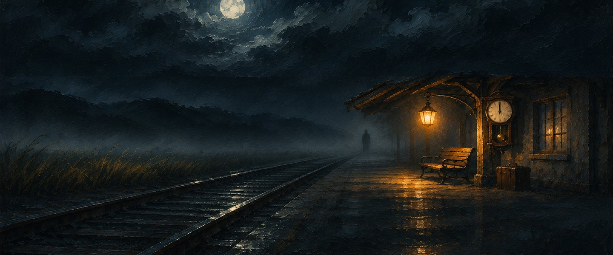
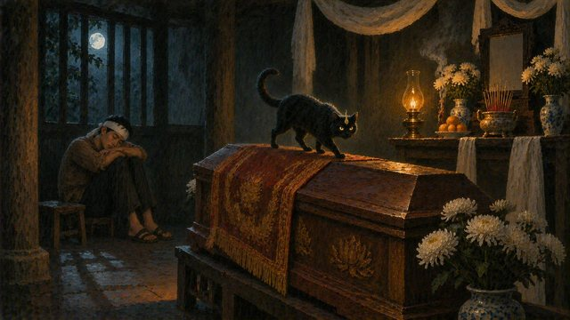
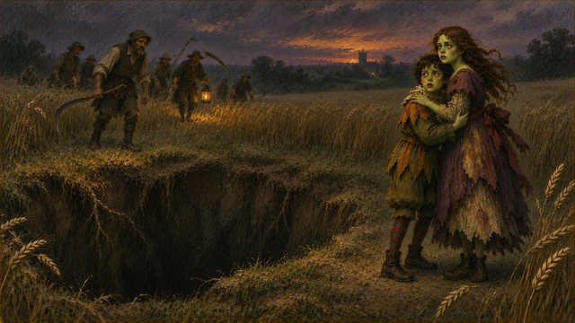

Nửa Đêm cho Người Lười

00:00. Đèn tắt. Nằm yên. Và đừng nhìn ra cửa sổ.Lights out. Lie still. And don't look out the window.
🔞 Nội dung chỉ dành cho người trưởng thànhFor adult audiences onlyVề kênhAbout the channel
Có những bí mật chỉ dám cất tiếng khi thành phố đã ngủ say. Nửa Đêm cho Người Lười đưa bạn bước vào vùng ranh giới mờ ảo của những truyền thuyết dân gian Việt Nam, các hiện tượng siêu nhiên không lời giải và những lời đồn đại rợn tóc gáy khắp thế giới.
Bạn không cần tự mình lật giở hàng trăm trang tài liệu cũ kỹ. Chỉ cần thả lỏng, nhắm mắt lại, cả thế giới bóng tối sẽ tự tìm đến bạn qua:
- Những thước tranh sơn dầu chuyển động: từng nét cọ u tối kể lại câu chuyện một cách sống động và ám ảnh.
- Góc khuất “Người ta biết gì”: bóc tách nguồn gốc, giả thuyết và những tư liệu lịch sử có thật đằng sau mỗi lời đồn. Mọi nguồn tham khảo đều ghi dưới phần mô tả video.
Không máu me. Không tội ác giật gân. Chỉ có sương mù, những khoảng lặng lạnh gáy và sự thật bị chôn vùi chờ người đủ can đảm lắng nghe.
🕛 Cánh cửa mở ra vào đúng 00:00 (giờ Việt Nam).
Some secrets only dare to speak once the city is fast asleep. Midnight for Lazy Souls takes you into the blurred borderland of Vietnamese folk legends, unexplained supernatural phenomena and the most chilling rumours from around the world.
You don't have to dig through hundreds of dusty pages yourself. Just relax, close your eyes, and let the dark come to you through:
- Moving oil paintings: every shadowy brushstroke tells the story, vivid and haunting.
- “What we actually know”: the origins, theories and real historical records behind each rumour. Every source is listed in the video description.
No gore. No sensational crime. Just fog, cold silences and buried truths waiting for someone brave enough to listen.
🕛 The door opens at exactly 00:00 (Vietnam time). Episodes are narrated in Vietnamese.
Các tậpEpisodes
- Tập 1Ep. 1Ga Kisaragi: Nhà ga không có trên bản đồKisaragi Station: the station on no map
Đêm 8/1/2004, một cô gái tên Hasumi lên chuyến tàu quen thuộc về nhà. Tàu cứ chạy mãi không dừng, rồi dừng ở một ga không người, không có trên bất kỳ bản đồ nào.
On the night of 8 January 2004, a young woman called Hasumi boards her usual train home. It runs on and on without stopping, then halts at an empty station that appears on no map.

- Tập 2Ep. 2Quỷ Nhập Tràng: Đừng để mèo nhảy quaQuỷ Nhập Tràng: never let the cat leap over
Ở làng quê Việt, khi nhà có tang, người ta canh không cho con mèo nào lại gần. Vì dân gian tin: nếu mèo nhảy qua người vừa mất, thứ gì đó sẽ nhập vào và ngồi dậy.
In Vietnamese villages, a house in mourning keeps every cat away from the coffin. Folk belief says that if a cat leaps over the newly dead, something will enter the body and sit up.

- Tập 3Ep. 3Hai Đứa Trẻ Xanh ở WoolpitThe Green Children of Woolpit
Một mùa gặt ở làng Woolpit, nước Anh, dân làng thấy hai đứa trẻ bước ra từ hố bẫy sói. Da chúng màu xanh lá. Chúng nói thứ tiếng không ai hiểu, và chỉ chịu ăn đậu.
One harvest in the English village of Woolpit, villagers find two children by a wolf pit. Their skin is green, they speak a language no one understands, and they will eat nothing but beans.

Cách chúng tôi làmHow we make it
- Mỗi tập dựa trên truyền thuyết, ghi chép lịch sử hoặc tài liệu có nguồn, nguồn ghi đầy đủ trong mô tả video.
- Giữ nguyên những chi tiết rợn của nguyên tác, không làm dịu câu chuyện, nhưng không có máu me hay cảnh bạo lực.
- Tranh minh hoạ do studio tạo theo phong cách sơn dầu riêng của kênh; video có sử dụng AI, kể cả giọng kể.
- Every episode is based on documented legends, historical records or sourced material, all listed in the video description.
- We keep the eerie details of the original story without softening it, but there is no gore or graphic violence.
- Illustrations are created by the studio in the channel's own oil-painting style; videos are made with the help of AI, including the narration voice.